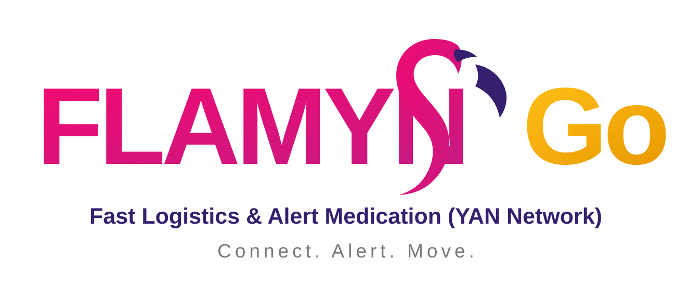

01
PENYIMPANAN
Ubat bercampur dalam raga / bekas plastik
Ubat oral, IV dan cecair tidak mempunyai pemisahan fizikal yang sistematik, meningkatkan risiko kekeliruan dan kesilapan pengendalian.

FLAMYNGo ExploreKIK 2026 · HOSPITAL YAN
Satu inovasi. Dua komponen. Pengurusan ubat floor stock yang lebih selamat, sistematik dan boleh dilihat secara masa nyata.
01 · THE PROBLEM
Pengurusan floor stock sebelum ini bergantung kepada penyimpanan fizikal yang kurang tersusun dan semakan manual. FLAMYNGo bermula daripada masalah operasi yang sebenar — bukan sekadar mahu menghasilkan aplikasi baharu.
PENYIMPANAN
Ubat oral, IV dan cecair tidak mempunyai pemisahan fizikal yang sistematik, meningkatkan risiko kekeliruan dan kesilapan pengendalian.
VISIBILITI
Status troli bergantung kepada telefon atau semakan fizikal. Ini menyukarkan staf mengetahui sama ada troli sedang dihantar, sedang diisi atau sudah tersedia.
MASA OPERASI
Data baseline projek merekodkan masa counter-check farmasi dan jururawat melebihi 15 minit.
IMPAK BASELINE
Data projek berdasarkan pembekalan floor-stock kepada Unit Kecemasan dan Wad Melor 1–4.